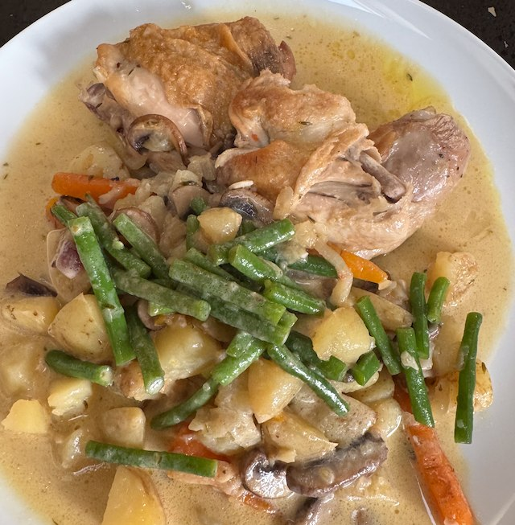

Chicken with lemon and thyme

By Gary Rhodes, from an unknown magazine.
Ingredients
- 25g butter
- olive oil
- 1 onion, chopped
- 300g new potatoes, halved
- 250g baby carrots
- 1 chicken, cut into breast, wing, leg and thigh
- salt and pepper
- 8 sprigs thyme
- 1 bay leaf
- 1 garlic clove, peeled
- 1 chicken stock pot
- 1 lemon, zest and juice
- 150ml double cream
- 200g mushrooms
- 250g green beans
Method
Heat casserole dish to medium. Add oil, butter, onions and soften for a few min. Add carrots, potatoes and fry some more.
Heat a frying pan to hot. Add oil, chicken, salt. Turn heat to medium and brown for a few minutes, flip and brown some more. Deglaze the pan with water and reserve. You will probably have to work in batches to cook all the chicken.
Add garlic, thyme, bay to the veg and fry for a moment. Then add stock pot, lemon zest, juice and cover with hot water and stir. Return chicken to pan. Bring to boil and cover.
Cook in oven for 40 min on 200°C fan.
Fry mushroom in pan on high heat until well cooked. Add to the casserole with 10 min to go on the cooking.
Divide chicken and veg between 4 plates and keep warm. Add bean to the stock, and reduce by half on a high heat. Take off heat and stir in cream to taste. Ladle over the chicken.